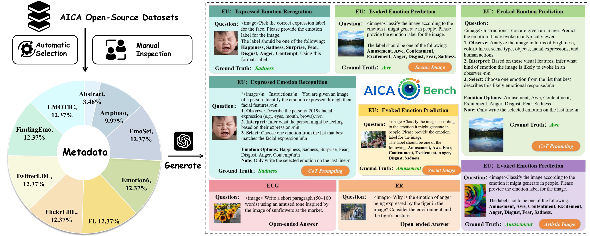

Overview
AICA-Bench extends affective evaluation beyond recognition alone by organizing Affective Image Content Analysis into a unified understanding, reasoning, and generation pipeline. The benchmark is built in two stages: first, 8,086 affective images are curated from 9 public datasets through automatic selection and human inspection; second, GPT-4o is used to construct 18,124 structured instructions spanning Emotion Understanding (EU), Emotion Reasoning (ER), and Emotion-guided Content Generation (EGCG).

Figure 1. AICA-Bench first filters emotionally clear samples from 9 open-source affective datasets, then automatically generates benchmark instructions across EU, ER, and EGCG with both label-based and open-ended formats.
Why AICA-Bench
Compared with prior emotion benchmarks for VLMs and MLLMs, AICA-Bench is the only one in our comparison that jointly covers Emotion Understanding, Emotion Reasoning, and Emotion-guided Content Generation, while also spanning 9 affective datasets and providing 18,124 benchmark instructions with both Basic and CoT prompting.
| Benchmark | Model | Tasks | #Datasets | #AICA Datasets | #Instr. | #Models | Prompt |
|---|---|---|---|---|---|---|---|
| EVE | VLM | EU | 5 | 5 | 8,009 | 7 | B+CoT |
| AffectGPT | MLLM | EU | 9 | 3 | - | 17 | B |
| EEmo-Bench | MLLM | EU | 1 | 1 | 6,773 | 19 | B |
| EmoBench-M | MLLM | EU | 13 | - | 6,226 | 20 | B |
| MOSABench | MLLM | EU | 1 | 1 | 1,000 | 8 | B |
| AICA-Bench (Ours) | VLM | EU, ER, EGCG | 9 | 9 | 18,124 | 23 | B+CoT |
Adapted from Table 1 in the introduction. EU denotes Emotion Understanding, ER denotes Emotion Reasoning, EGCG denotes Emotion-guided Content Generation, and CoT denotes Chain-of-Thought prompting.
Two-stage construction
Stage 1 selects representative affective images and removes emotionally ambiguous or unsafe samples through trained human inspection. Stage 2 generates task-specific prompts with consistent structure and scalable coverage.
Task coverage
EU tests expressed and evoked emotion prediction, ER requires grounded causal explanation, and EGCG evaluates whether a model can generate emotionally aligned descriptions conditioned on the source image and target emotion.